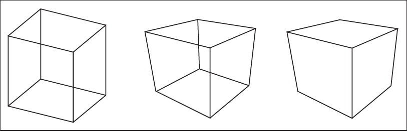
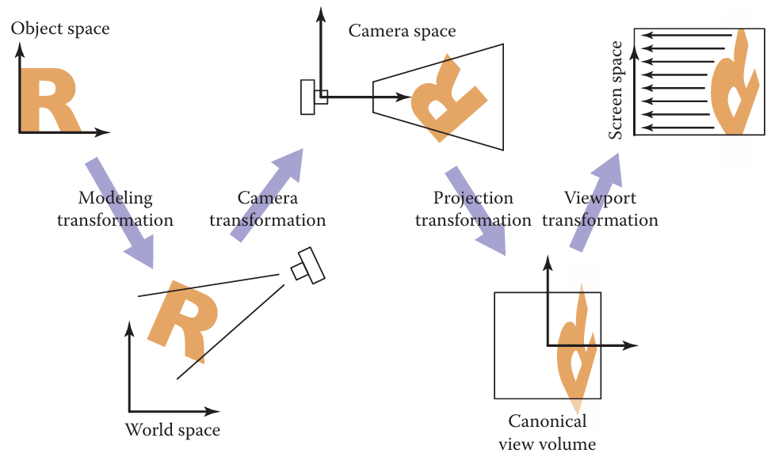
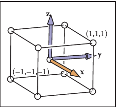
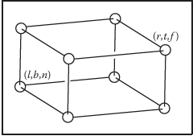
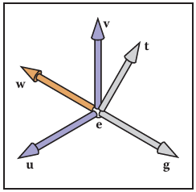
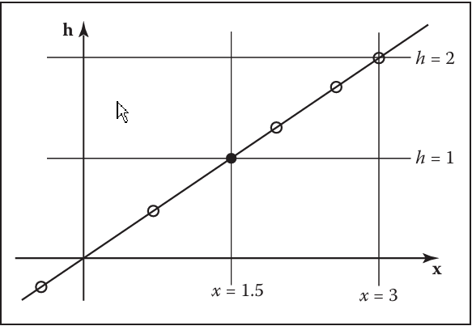
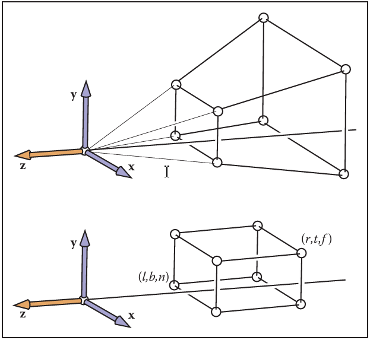
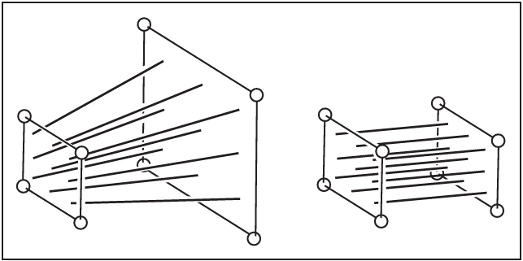
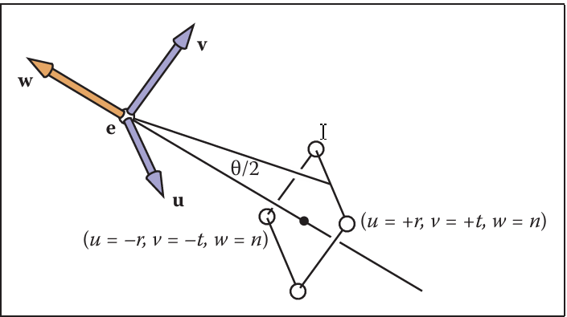

Viewing
The transformations is project 3D points in the scene (world space) to 2D points in the image (image space)
Rasterization(光栅化) 本质上是从 物体 $\rightarrow$ 经过矩阵变换 $\rightarrow$ 砸到屏幕（眼睛）上

左图：正交投影（Orthographic Projection）中图：透视投影（Perspective Projection） 右图：移除了隐藏线（Hidden Lines）的 透视投影
The Viewport Transformation (视口变换)
视图变换（The viewing transformation）的任务是将以规范坐标系（canonical coordinate system）中的 (x, y, z) 坐标表示的 3D 位置，映射为以像素为单位表示的图像中的坐标。
最好的处理方法是将其分解为几个更简单的变换的乘积。大多数图形系统通过使用以下三个变换序列来实现这一点：
- 相机变换（camera transformation）或 眼变换（eye transformation）： 这是一个刚体变换（rigid body transformation），负责将相机放置在原点，并调整到一个方便的朝向。它仅取决于相机的位置和朝向，即相机的 “位姿”（pose）。
- 投影变换（projection transformation）： 它将点从相机空间进行投影，使得所有可见点在 $x$ 和 $y$ 方向上都落在 $-1$ 到 $1$ 的范围内。它仅取决于所需的投影类型。
- 视口变换（viewport transformation）或 窗口变换（windowing transformation）： 它将这个（范围在 -1 到 1 的）单位图像矩形，映射为像素坐标系中所需的矩形。它仅取决于输出图像的大小和位置。
为了便于描述这个过程的各个阶段，我们给这些作为变换输入和输出的坐标系起了名字：

将物体从其原始坐标（变换）到屏幕空间的一系列坐标空间和变换过程。
- 相机变换（The camera transformation） 将点从规范坐标（或世界空间）转换到相机坐标，或者说将它们放置在相机空间中。
- 投影变换（The projection transformation） 将点从相机空间移动到规范视体积（canonical view volume） 中。
- 视口变换（The viewport transformation） 将规范视体积映射到屏幕空间（screen space）。
World Space 与 canonical view volume 是两个不同的空间
World Space (起点) $\xrightarrow{\text{相机变换}}$ Camera Space $\xrightarrow{\text{投影变换}}$ Canonical View Volume (中转站) $\xrightarrow{\text{视口变换}}$ Screen Space
The Viewport Transformation
规范视体积” (canonical view volume) 中，并且我们希望用一个看向 $-z$ 方向的正交相机来观察它，规范视体积是一个包含所有笛卡尔坐标在 $-1$ 和 $+1$ 之间的 3D 点的立方体——即 $(x, y, z) \in [-1, 1]^3$

典型视图体积是一个边长为二、以原点为中心的立方体。我们将 $x = -1$ 投影到屏幕左侧，$x = +1$ 投影到屏幕右侧，$y = -1$ 投影到屏幕底部，以及 $y = +1$ 投影到屏幕顶部。
每个像素“拥有”一个以整数坐标为中心的单位正方形；图像边界比像素中心多出半个单位的延伸量（overshoot）；并且最小的像素中心坐标是 $(0, 0)$。
[注：这意味着第0个像素的中心是0，但它的左边缘是 -0.5，右边缘是 0.5]
如果我们要绘制到一个有 $n_x \times n_y$ 个像素的图像（或屏幕上的窗口）中，我们需要将正方形 $[-1, 1]^2$ 映射到矩形 $[-0.5, n_x - 0.5] \times [-0.5, n_y - 0.5]$。
由于视口变换将一个轴对齐矩形映射到另一个轴对齐矩形，它是公式 (6.6) 给出的窗口变换的一种情况：
注意，这个矩阵（指上一张图的 3x3 矩阵）忽略了规范视体积中点的 $z$ 坐标，因为一个点沿着投影方向的距离（即它有多远），并不会影响该点在图像（平面）上的投影位置。之前，我们（给矩阵）添加了一行和一列，以便在不改变 $z$ 坐标的情况下将其保留下来。最终我们将需要这些 $z$ 值，因为它们可以用来使较近的表面遮挡较远的表面
正交投影变换 (The Orthographic Projection Transformation)
我们通常想要渲染的几何体，是位于“规范视体积”以外的某个空间区域内的。我们泛化（推广）视图的第一步是：保持观察方向和朝向固定不变（依然是沿着 $-z$ 轴看，$+y$ 轴朝上），但允许观察任意大小的矩形区域。与其替换掉（刚才讲的）视口矩阵，我们不如通过在它的右侧乘以另一个矩阵来扩充它。在这些约束下，视体积是一个“轴对齐的盒子”（axis-aligned box）。我们将命名其各个面的坐标，使得视体积表示为 $[l, r] \times [b, t] \times [f, n]$，如图所示

我们把这个盒子称为“正交视体积”，并将其边界平面定义如下：
1 | x =l ≡left plane, |
假设观察者是沿着 负 $z$ 轴观看的，且其头部指向 $y$ 方向。这意味着 $n > f$，这可能有些反直觉。但如果你假设整个正交视体积的 $z$ 值都是负数，那么只有当 $n > f$ 时，$z = n$ 的“近”平面才会离观察者更近;$f$ 是一个比 $n$ 更小的数，也就是说，它是一个绝对值比 $n$ 更大的负数。(eg:-10>-100)个概念展示在图
 。
。从正交视体积到规范视体积的变换是另一种窗口变换，所以我们可以直接把正交视体积和规范视体积的边界代入方程 (6.7)，从而得到这个变换的矩阵：
为了在正交视体积中绘制 3D 线段，我们将它们投影到屏幕的 $x$ 和 $y$ 坐标中，并忽略 $z$ 坐标。我们通过组合方程 (7.2) 和 (7.3) 来实现这一点。请注意，在程序中，我们将这些矩阵相乘形成一个（复合）矩阵，然后按如下方式对点进行变换操作：
（变换后的）$z$ 坐标现在将位于 $[-1, 1]$ 范围内。
因此，绘制许多具有端点 $\mathbf{a}_i$ 和 $\mathbf{b}_i$ 的 3D 线段的代码变得既简单又高效：1
2
3
4
5
6
7construct M_vp // 构建视口变换矩阵
construct M_orth // 构建正交投影矩阵
M = M_vp * M_orth // 关键步骤：矩阵预合并！
for each line segment (a_i, b_i) do // 遍历每一条线
p = M * a_i // 用合并后的矩阵变换点 a
q = M * b_i // 用合并后的矩阵变换点 b
drawline(x_p, y_p, x_q, y_q) // 画线（只用 x, y 坐标）
相机变换 (The Camera Transformation)
我们希望能能够在 3D 空间中改变视点，并朝向任意方向观察。关于如何指定观察者的位置和朝向，存在许多不同的惯例。我们将采用如下定义

：- 眼位置（the eye position） $\mathbf{e}$，
- 视线方向（the gaze direction） $\mathbf{g}$，
- 视图向上向量（the view-up vector） $\mathbf{t}$。
眼位置是眼睛进行“观察”所在的点。如果将图形学看作摄影过程，它就是镜头的中心。视线方向是沿着观察者观看方向的任意向量。视图向上向量是位于将观察者头部平分为左右两半的那个平面内的任意向量，并且对于一个站在地面上的人来说，该向量指向“天空”。这些向量为我们提供了足够的信息，可以建立一个以 $\mathbf{e}$ 为原点、以及包含 $\mathbf{uvw}$ 基底的坐标系，使用如下结构公式：
如果我们需要变换的所有点，都已经是以 $\mathbf{e}$ 为原点，且以基向量 $\mathbf{u}, \mathbf{v}, \mathbf{w}$ 为基底的坐标形式存储的，那么我们的工作就完成了。但是如图所示，模型的坐标是根据规范（或世界）原点 $\mathbf{o}$ 以及 $x, y, z$ 轴来存储的。 为了任意查看，我们需要将要存储的点转换到“合适”的坐标系统。在这种情况下，它的原点为 e，并且坐标偏移以 uvw 表示。
为了任意查看，我们需要将要存储的点转换到“合适”的坐标系统。在这种情况下，它的原点为 e，并且坐标偏移以 uvw 表示。
为了使用我们已经开发好的（投影和视口变换）机制，我们只需要将希望绘制的线段端点的坐标，从 $xyz$ 坐标转换为 $uvw$ 坐标。执行此变换的矩阵是相机坐标系的“规范-基底”矩阵（即世界坐标到相机坐标的变换矩阵）：
或者，我们可以将这同一个变换理解为：首先将 $\mathbf{e}$ 移动到原点，然后将 $\mathbf{u}, \mathbf{v}, \mathbf{w}$ （旋转）对齐到 $\mathbf{x}, \mathbf{y}, \mathbf{z}$。为了使我们之前那个仅适用于（沿）$z$ 轴观察的算法，能够适用于具有任意位置和朝向的相机，我们只需要将这个相机变换添加到视口变换和投影变换的乘积中，这样它就能在投影之前将输入的点从世界坐标转换为相机坐标：1
2
3
4
5
6
7
8construct M_vp // 构建视口矩阵
construct M_orth // 构建正交投影矩阵
construct M_cam // 构建相机变换矩阵
M = M_vp M_orth M_cam // 将它们乘在一起（注意顺序：先乘相机，再投影，最后视口）
for each line segment (a_i, b_i) do // 遍历每条线段
p = M a_i // 变换点 a
q = M b_i // 变换点 b
drawline(x_p, y_p, x_q, y_q) // 画线
再一次地，一旦矩阵基础设施就位，几乎不需要编写什么代码。
Projective Transformations (投影变换/透视变换)
我们将透视（变换）留到最后来讲，是因为需要一点“巧劲”（或者说精妙的技巧），才能将其融入到迄今为止一直行之有效的向量和矩阵变换体系中。
(注：普通的矩阵乘法只能做加法和乘法，做不了“除法”，而透视恰恰需要除法。)
为了弄清楚我们需要做什么，让我们先来看看透视投影变换需要如何处理相机空间中的点。回想一下，视点位于原点，且相机是沿着 $z$ 轴方向进行观察的。透视的一个关键特性是：对于一个位于原点并看向负 $z$ 轴方向的眼睛来说，物体在屏幕上的大小与 $1/z$ 成正比。(注：这就是“近大远小”的数学本质。距离 $z$ 越大，分母越大，看到的物体 $1/z$ 就越小。)
这一点可以用下图所示几何结构的方程更精确地表示出来：
$y$：物体原本的高度（比如一棵树高 10 米）。$z$：物体离眼睛的距离（树离你 100 米）。$d$：屏幕离眼睛的距离（焦距）。$y_s$：屏幕上画出来的高度

方程 (7.5) 的几何示意图。观察者的眼睛位于 $\mathbf{e}$，视线方向为 $\mathbf{g}$（负 $z$ 轴）。视平面（View Plane）距离眼睛的距离为 $d$。一个点朝向 $\mathbf{e}$ 进行投影，其与视平面的交点即为绘制位置。
这里的 $y$ 是点沿 $y$ 轴的距离，而 $y_s$ 是该点在屏幕上应该被绘制的位置。我们非常希望利用之前为正交投影开发的矩阵机制来绘制透视图像；这样我们就只需要再把另一个矩阵乘到我们的组合矩阵中，然后直接复用现有的算法即可。然而，这种类型的变换——即输入向量的某个坐标出现在分母中——是无法通过仿射变换（affine transformations）来实现的。我们可以通过对一直用于仿射变换的齐次坐标机制进行简单的推广，从而允许除法运算。之前我们约定用齐次向量 $[x\ y\ z\ 1]^T$ 来表示点 $(x, y, z)$；那个额外的坐标 $w$ 总是等于 1，这一点是通过总是将仿射变换矩阵的第四行设为 $[0\ 0\ 0\ 1]^T$ 来保证的。不再仅仅把这个 1 看作是为了强行让矩阵乘法实现平移而“硬塞”进去的额外部分，我们现在将其定义为 $x, y, z$ 坐标的分母：即齐次向量 $[x\ y\ z\ w]^T$ 代表点 $(x/w, y/w, z/w)$。
(注：这是全书最重要的定义之一。以前 $w=1$，除以 1 还是它自己。现在 $w$ 可以是任何数，这就实现了除法！)
当 $w=1$ 时，这没有任何区别；但如果我们允许变换矩阵的最后一行取任意值，从而使 $w$ 能够取 1 以外的数值，这就允许我们要实现的变换范围变得更广。
具体来说，线性变换允许我们计算如下表达式：
而仿射变换将其扩展为：
将 $w$ 视为分母进一步扩展了可能性，允许我们计算如下函数：
这可以被称为 $x, y, z$ 的“线性有理函数”。但这里有一个额外的约束——变换后点的所有坐标的分母必须是相同的：
表示为矩阵变换，
以及
像这样的变换被称为“投影变换”（projective transformation）或“单应性”（homography）。
例子。矩阵
表示一个 2D 投影变换，它将单位正方形 $([0, 1] \times [0, 1])$ 变换为下图所示的四边形。
投影变换将正方形映射为四边形，它保留了直线（直线变换后还是直线），但不保留平行线（变换后可能相交）。
例如，位于 $(1, 0)$ 的正方形右下角由齐次向量 $[1\ 0\ 1]^T$ 表示，并且变换如下：
它代表点 $(1/\frac{1}{3}, 0/\frac{1}{3})$，即 $(3, 0)$。
注意，如果我们使用矩阵
事实上，任何标量倍数 $c\mathbf{M}$ 都是等价的：分子和分母都缩放了 $c$ 倍，这不会改变结果。
有一种更优雅的方式来表达同样的想法，它避免了对 $w$ 坐标进行特殊处理。在这个观点下，3D 投影变换仅仅是一个 4D 线性变换，并附加了一个额外的规定——即一个向量的所有标量倍数都指代同一个点：
符号 $\sim$ 读作“等价于”，意思是这两个齐次向量都描述了空间中的同一个点。

点 $x = 1.5$ 由直线 $x = 1.5h$ 上的任意一点表示，例如那些空心圆圈处的点.然而，在我们把 $x$ 解释为常规的笛卡尔坐标之前，我们首先除以 $h$（即 $w$），从而得到 $(x, h) = (1.5, 1)$，也就是图中黑点所示的位置。
例子: 在 1D 齐次坐标中（我们使用 2-向量来表示实数轴上的点），我们可以用齐次向量 $[1.5\ 1]^T$ 来表示点 $(1.5)$，或者用齐次空间中直线 $x = 1.5h$ 上的任何其他点来表示。见上图。在 2D 齐次坐标中（我们使用 3-向量来表示平面上的点），我们可以用齐次向量 $[-2\ -1\ 2]^T$ 来表示点 $(-1, -0.5)$，或者用直线 $\mathbf{x} = \alpha[-1\ -0.5\ 1]^T$ 上的任何其他点来表示。这条直线上的任何齐次向量，都可以通过映射到该直线与平面 $w = 1$ 的交点，来获得其对应的笛卡尔坐标。见下图 齐次坐标中的一个点等价于穿过它和原点的直线上的任何其他点；而对该点进行归一化，就相当于求这条直线与平面 $w = 1$ 的交点。
齐次坐标中的一个点等价于穿过它和原点的直线上的任何其他点；而对该点进行归一化，就相当于求这条直线与平面 $w = 1$ 的交点。
我们可以根据需要对齐次向量进行任意次变换，而完全不必担心 $w$ 坐标的值——事实上，即使在某些中间阶段 $w$ 坐标为零也是没问题的。只有当我们想要获取一个点的普通笛卡尔坐标时，我们才需要将其归一化(normalize)为一个 $w=1$ 的等价点，这相当于把所有坐标都除以 $w$。一旦完成了这一步，我们就允许从齐次向量的前三个分量中直接读出 $(x, y, z)$ 坐标了。
Perspective Projection (透视投影)
投影变换的机制使得实现透视所需的“除以 $z$”操作变得简单。在图View plane所示所示的 2D 示例中，我们可以通过如下的矩阵变换来实现透视投影：
这就将 2D 齐次向量 $[y\ z\ 1]^T$ 变换为了 1D 齐次向量 $[dy\ z]^T$，它代表 1D 点 $(dy/z)$（因为它等价于 1D 齐次向量 $[dy/z\ 1]^T$）。这与方程 (7.5) 是相匹配的。
(注：这是对上一页计算结果的总结。)
对于 3D 中“官方”的透视投影矩阵，我们将采用我们通常的惯例，即相机位于原点并面向 $-z$ 方向，因此点 $(x, y, z)$ 的（正）距离是 $-z$。
(注：因为在右手系中，相机前面的物体 $z$ 坐标是负数，所以它的物理距离是 $-z$。)
与正交投影一样，我们也采用近平面 (near plane) 和远平面 (far plane) 的概念，它们限制了可见距离的范围。在这种语境下，我们将使用近平面作为投影平面，所以图像平面的距离是 $-n$。
时所需的映射变为 $y_s = (n/z)y$，对于 $x$ 也是类似的。这种变换可以通过 透视矩阵 (perspective matrix) 来实现：💡
第一行、第二行和第四行仅仅是实现了透视方程。
(注：即 $x’ = nx/z, y’ = ny/z$ 以及 $w=z$。)
第三行（就像在正交投影和视口矩阵中一样）的设计初衷是把 $z$ 坐标“顺道带上 (along for the ride)”，这样我们以后就能利用它来进行隐藏面消除（即深度测试/Z-Buffer）。然而在透视投影中，由于引入了一个非恒定的分母（即 $z$ 本身），使得我们无法真正保留 $z$ 的原始值——事实上，想要在让 $x$ 和 $y$ 完成我们所需的（透视）变换的同时还让 $z$ 保持不变，是不可能的。取而代之的是，我们选择让位于近平面或远平面上的点的 $z$ 值保持（相对）不变。
(注：这里的“不变”是指映射后，$z=n$ 还是映射到 $n$， $z=f$ 还是映射到 $f$，尽管中间的值会发生非线性扭曲。)
有许多矩阵都可以充当透视矩阵，而且它们都会非线性地扭曲 $z$ 坐标。
这个特定的矩阵具有图 7.12 和 7.13 中所示的优良性质；它完全保留 $(z = n)$ 平面上的点不动，而对于 $(z = f)$ 平面上的点，它虽然在 $x$ 和 $y$ 方向上进行了适量的“挤压”（透视缩放），但保留了该平面的 $z$ 位置。该矩阵对点 $(x, y, z)$ 的作用效果如下：

透视投影保持 $z=n$ 平面上的点不变，并将透视视锥体（Perspective Volume）后方巨大的 $z=f$ 矩形，映射为正交视锥体（Orthographic Volume）后方较小的 $z=f$ 矩形。
透视投影将任何经过原点（即眼睛/视点）的直线，映射为一条平行于 z 轴的直线，并且保持该直线上位于 $z=n$（近平面）处的点不动。正如你所见，$x$ 和 $y$ 经过了缩放，而且更重要的是，它们被 $z$ 除了。
(注：这就是产生“近大远小”透视效果的根本原因。)
因为 $n$ 和 $z$（在视锥体内部）都是负数，所以在 $x$ 和 $y$ 方向上不会发生“翻转”（即镜像颠倒）。
(注：负负得正。$x’ = n \cdot x / z$。如果 $n$ 是负的，$z$ 也是负的，比值就是正的，所以左边还是左边，没有颠倒。)
虽然这一点不那么显而易见，但该变换还保留了 $z=n$ 和 $z=f$ 之间 $z$ 值的相对顺序，这使得我们在应用此矩阵后依然能够进行深度排序。
(注：这就是之前讨论的，虽然 $z$ 被非线性扭曲了，但“谁在前、谁在后”的关系没乱。)
这对于我们稍后进行隐藏面消除（即判断遮挡关系/Z-Buffer）至关重要。有时我们需要计算 $\mathbf{P}$ 的逆矩阵，例如，为了将屏幕坐标（加上 $z$ 值）还原回原始空间，比如在进行拾取（Picking，即鼠标点击选中物体）操作时就需要这样做。其逆矩阵为：
因为将齐次向量乘以一个标量不会改变它的含义，所以对于作用在齐次向量上的矩阵来说也是如此。因此，我们可以通过（给整个矩阵）乘以 $nf$，把逆矩阵写成一个更漂亮的形式：
将其置于方程 (7.3) 中正交投影矩阵 $\mathbf{M}{\text{orth}}$ 的语境下看，透视矩阵（$\mathbf{P}$）仅仅是将透视视锥体（perspective view volume，它的形状就像是金字塔的一个切片，或称为平截头体/frustum）
映射为了正交视锥体（一个轴对齐的包围盒）。透视矩阵的美妙之处在于，一旦我们应用了它，我们就可以直接使用正交变换，来进入规范视域体（canonical view volume，即 $[-1, 1]^3$ 的标准正方体）。因此，所有（之前写好的）正交投影机制都能继续使用，我们所添加的不过是一个矩阵（$\mathbf{P}$）和除以 $w$ 的操作。同样令人欣慰的是，我们四乘四矩阵的最底下一行也没有被“浪费”掉（终于派上用场了）！将 $\mathbf{P}$ 与 $\mathbf{M}{\text{orth}}$ 连接（相乘）起来，就得到了透视投影矩阵 (perspective projection matrix)：
然而，有一个问题是：在透视投影中，$l, r, b, t$（左、右、下、上边界）是如何确定的？它们定义了我们观察世界时所通过的那个“窗口”。由于透视矩阵 $\mathbf{P}$ 不会改变在 $(z = n)$ 平面（近平面）上的 $x$ 和 $y$ 的值，因此我们就可以在该平面上直接指定 $(l, r, b, t)$。为了将透视矩阵整合到我们原有的正交投影基础架构中，我们只需将 $\mathbf{M}{\text{orth}}$ 替换为 $\mathbf{M}{\text{per}}$。这相当于在应用了相机矩阵 $\mathbf{M}{\text{cam}}$ 之后、进行正交投影之前，插入了透视矩阵 $\mathbf{P}$所以，用于透视观察的完整矩阵集为：$$\mathbf{M} = \mathbf{M}{\text{vp}}\mathbf{M}{\text{orth}}\mathbf{P}\mathbf{M}{\text{cam}}.$$
然而，有一个问题是：在透视投影中，$l, r, b, t$ 是如何确定的？它们定义了我们观察时所通过的“窗口”。由于透视矩阵不改变 $(z = n)$ 平面上 $x$ 和 $y$ 的值，因此我们可以直接在该平面上指定 $(l, r, b, t)$。为了将透视矩阵整合到正交基础架构中，只需将 $\mathbf{M}{\text{orth}}$ 替换为 $\mathbf{M}{\text{per}}$，即在相机矩阵 $\mathbf{M}{\text{cam}}$ 之后、正交投影之前插入透视矩阵 $\mathbf{P}$。因此，用于透视观察的完整矩阵集为：$$\mathbf{M} = \mathbf{M}{\text{vp}}\mathbf{M}{\text{orth}}\mathbf{P}\mathbf{M}{\text{cam}}.$$
最终的算法如下：compute $\mathbf{M}{\text{vp}}$ (计算视口矩阵)compute $\mathbf{M}{\text{per}}$ (计算透视投影矩阵，即 $\mathbf{M}{\text{orth}}\mathbf{P}$)compute $\mathbf{M}{\text{cam}}$ (计算相机视图矩阵)
将其置于方程 (7.3) 中正交投影矩阵 $\mathbf{M}_{\text{orth}}$ 的语境下看，透视矩阵（$\mathbf{P}$）仅仅是将透视视锥体（perspective view volume，它的形状就像是金字塔的一个切片，或称为平截头体/frustum）映射为了正交视锥体（一个轴对齐的包围盒）。
透视矩阵的美妙之处在于，一旦我们应用了它，我们就可以直接使用正交变换，来进入规范视域体（canonical view volume，即 $[-1, 1]^3$ 的标准正方体）。因此，所有（之前写好的）正交投影机制都能继续使用，我们所添加的不过是一个矩阵（$\mathbf{P}$）和除以 $w$ 的操作。同样令人欣慰的是，我们四乘四矩阵的最底下一行也没有被“浪费”掉（终于派上用场了）！
将 $\mathbf{P}$ 与 $\mathbf{M}_{\text{orth}}$ 连接（相乘）起来，就得到了透视投影矩阵 (perspective projection matrix)：
然而，有一个问题是：在透视投影中，$l, r, b, t$（左、右、下、上边界）是如何确定的？它们定义了我们观察世界时所通过的那个“窗口”。由于透视矩阵 $\mathbf{P}$ 不会改变在 $(z = n)$ 平面（近平面）上的 $x$ 和 $y$ 的值，因此我们就可以在该平面上直接指定 $(l, r, b, t)$。
为了将透视矩阵整合到我们原有的正交投影基础架构中，我们只需将 $\mathbf{M}{\text{orth}}$ 替换为 $\mathbf{M}{\text{per}}$。这相当于在应用了相机矩阵 $\mathbf{M}_{\text{cam}}$ 之后、进行正交投影之前，插入了透视矩阵 $\mathbf{P}$。所以，用于透视观察的完整矩阵集为：
最终的算法如下：
- compute $\mathbf{M}_{\text{vp}}$ (计算视口矩阵)
- compute $\mathbf{M}{\text{per}}$ (计算透视投影矩阵，即 $\mathbf{M}{\text{orth}}\mathbf{P}$)
- compute $\mathbf{M}_{\text{cam}}$ (计算相机视图矩阵)
for each line segment $(\mathbf{a}_i, \mathbf{b}_i)$ do
请注意，除了增加了一个矩阵之外，唯一的变化就是除以了齐次坐标 $w$。
请注意，除了增加了一个矩阵之外，唯一的变化就是除以了齐次坐标 $w$。
乘开之后（将正交矩阵与透视矩阵相乘），矩阵 $\mathbf{M}_{\text{per}}$ 看起来像这样：
这种或类似的矩阵经常出现在（各大图形 API 的）官方文档中。当人们意识到它们通常只是几个简单矩阵相乘的产物时，它们就不再显得那么神秘了。例子。 许多 API（例如 OpenGL，Shreiner 等，2004）使用了与这里展示的相同的规范视域体（即 $[-1, 1]^3$ 的盒子）。它们也通常让用户指定 $n$ 和 $f$ 的绝对值（absolute values）。OpenGL 的投影矩阵是：
其他一些 API 会将 $n$ 和 $f$ 分别映射到 $0$ 和 $1$。Blinn (J. Blinn, 1996) 建议为了提高效率，将规范视域体做成 $[0, 1]^3$。所有这些设定上的决定都会让投影矩阵发生轻微的改变。
Some Properties of the Perspective Transform (透视变换的一些性质)
透视变换的一个重要性质是，它将直线映射为直线，将平面映射为平面。此外，它还将视锥体（view volume）中的线段映射为规范视域体（canonical volume，即标准立方体）中的线段。
为了理解这一点，请考虑以下线段方程：
当被一个 $4 \times 4$ 矩阵 $\mathbf{M}$ 变换时，它（指上一页提到的线段上的点）变成了一个齐次坐标可能会发生变化的点：
齐次化（即所有坐标除以 $w$ 分量）后的 3D 线段为：
如果方程 (7.6) 可以被重写为如下形式：
那么所有齐次化后的点就都位于一条 3D 直线上。对方程 (7.6) 进行硬核的代数推导（Brute force manipulation）确实可以得到这种形式，其中：
结果还表明，线段确实映射成了线段，并且保留了点的顺序，也就是说，它们不会被重新排序或“撕裂（torn）”。
将线段映射为线段的变换所带来的一个必然结果是，它会将一个三角形的边和顶点，映射为另一个三角形的边和顶点。因此，它将三角形映射为三角形，将平面映射为平面。
透视变换的一个重要性质是，它将直线映射为直线，将平面映射为平面。此外，它还将视锥体（view volume）中的线段映射为规范视域体（canonical volume，即标准立方体）中的线段。
为了理解这一点，请考虑以下线段方程：
当被一个 $4 \times 4$ 矩阵 $\mathbf{M}$ 变换时，它（指上一页提到的线段上的点）变成了一个齐次坐标可能会发生变化的点：
齐次化（即所有坐标除以 $w$ 分量）后的 3D 线段为：
如果方程 (7.6) 可以被重写为如下形式：
那么所有齐次化后的点就都位于一条 3D 直线上。对方程 (7.6) 进行硬核的代数推导（Brute force manipulation）确实可以得到这种形式，其中：
结果还表明，线段确实映射成了线段，并且保留了点的顺序，也就是说，它们不会被重新排序或“撕裂（torn）”。
将线段映射为线段的变换所带来的一个必然结果是，它会将一个三角形的边和顶点，映射为另一个三角形的边和顶点。因此，它将三角形映射为三角形，将平面映射为平面。
Field-of-View 视场角 (视野)
虽然我们可以使用 $(l, r, b, t)$（左、右、下、上）和 $n$（近平面距离）的值来指定任何一个观察窗口，但有时我们希望有一个更简单的系统——在这个系统中，我们总是透过窗口的正中心向外看。这意味着我们需要引入以下约束：
如果我们再增加一个约束条件，即像素是正方形的（也就是说，图像中的形状不会发生任何扭曲变形），那么 $r$ 与 $t$ 的比值，必须等同于水平像素数量（$n_x$）与垂直像素数量（$n_y$）的比值：

视场角 (Field-of-View, FOV) $\theta$ 是指从眼睛（视点）测量的、从屏幕底部到屏幕顶部的夹角。一旦指定了 $n_x$ 和 $n_y$（即屏幕的水平和垂直像素数），这就只剩下一个自由度了。这通常使用图 7.14 中所示的视场角 (field-of-view) $\theta$ 来设置。这有时被称为垂直视场角 (vertical field-of-view)，以区别于左右两侧之间的夹角（水平视场角），或对角线之间的夹角。从图中我们可以看出：
如果指定了 $n$（近平面距离）和 $\theta$（视场角），那么我们就可以推导出 $t$（上边界高度），并将其代入更通用的视图系统代码中。在某些系统（或图形引擎）中，$n$ 的值被硬编码（hard-coded）为某个合理的值，因此我们又少了一个自由度。
常见问题解答
• 正交投影在实际应用中到底有用吗？
它在那些“判断相对长度非常重要”的应用中非常有用。(注：比如工业制图、CAD、建筑蓝图。) 在某些情况下（例如一些医疗可视化应用），透视投影的计算成本可能过高，此时正交投影也能带来计算上的简化。
• 我在透视投影下绘制的细分球体（tessellated spheres，即由多边形网格构成的球）看起来像椭圆。这是一个 bug 吗？
不。这是正确的行为。如果你把你真实的眼睛放在相对于物理屏幕的某个位置，这个位置正好等同于虚拟观察者（相机）相对于视口（viewport）的位置，那么这些屏幕上的椭圆（在你的视网膜上）看起来就会像完美的圆，因为你本身是在一个倾斜的角度下观察屏幕上这些区域的。
• 透视矩阵是否会将负的 $z$ 值映射为正的 $z$ 值并导致顺序颠倒？这难道不会引起麻烦吗？
是的。变换后 $z$ 的方程式为：
因此，（无限接近 0 的正数）$z = +\epsilon$ 会被映射为 $z’ = -\infty$，而（无限接近 0 的负数）$z = -\epsilon$ 会被映射为 $z = \infty$。所以，任何跨越了 $z = 0$ 平面的线段都会被“撕裂（torn）”，尽管所有的点最终都会被投影到屏幕上某个适当的位置。当所有物体都被包含在视锥体（viewing volume）内时，这种撕裂就无关紧要了。这通常是通过将物体裁剪（clipping）到视锥体内来保证的。然而，裁剪操作本身会因为这种撕裂现象而变得更加复杂。
• 透视矩阵改变了齐次坐标（$w$）的值。这难道不会导致平移（move）和缩放（scale）变换不再正常工作吗？
对一个（$w$ 值不再是 1 的）齐次点应用平移变换，我们得到：
(注：公式中最后一步的 “homogenize” 意为“齐次化”，即所有分量除以最后一个分量 $h$)
类似的效果也适用于其他变换